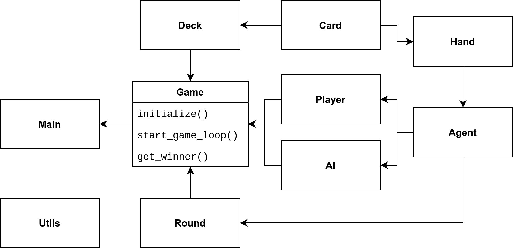

Go Fish! could not only be a call to the fishing rods but is also the name of a card game. It is known under different names and variations in Europe and the Anglosphere; it resembles the game Quartets. In this work we analyse the game Go Fish using the framework of modal epistemic logic and apply our findings to an online playable version of the game.
Rules
Go Fish is a card game played with a French-suited standard 52-card deck. In a real world setting Go Fish is played by two to five players. In this work we focus on three player games.
The goal for each player is to maximize the number of books collected by the end of the game. A book is a set of four cards with identical rank (card number or face). Suits don't play a role in Go Fish.
At the beginning of the game each player is dealt seven random cards from the deck (five cards for four or more players). Dealt cards are only visible to the receiving player. The deck lays face down.
After dealing, a random player is designated to take a turn. The turn taking player asks another player for all cards of a rank that he owns at least one card of. If the asked player has any number of cards of the requested rank the cards are handed over to the asking player. In the case that cards were handed over, the turn taking player again asks another player for all cards of some rank. This condition may apply an unlimited number of times; the asked player and the asked card can be freely chosen each time by the turn taker. Whenever cards are handed over they are revealed to all players. If the asked player has no cards of the requested rank then the asked player says "Go Fish!" and the asking player draws a card from the top of the deck; this ends the turn.
After completing a turn, the player to the left of the previous player takes a turn (clockwise play). Once a player completes a book, the respective cards are placed on the playing table face up.
Whenever a player has no cards on hand the player immediately draws one card from the top of the deck. Afterwards the game proceeds as described.
The game ends when all thirteen books have been completed. A winning player is the player with most books.
Methods
For this work we develop an interactive web application. The application models the Go Fish game. It enables a human user to play the game against two AI opponents. The application is built on top of HTML, CSS and JavaScript without the use of frameworks.
The figure shows a dependency graph for the game implementation in JavaScript. Each box corresponds to a class in the object-oriented programming paradigm; with the exception of the Main and Utils boxes. For the Game class, its methods are listed below. These three methods control the main course of a game from initialization, to turn taking to ending the game. The arrows in the dependency graph flow from dependencies towards depending classes. For example class Agent requires the notion of a hand of cards; this is implemented in class Hand. A hand in turn depends on the notion of cards found defined in class Card. No dependency arrows are shown for the Utils class because the Utils class itself has no dependencies and it contains only pure functions; Utils may be considered accessible from any other class.
Currently the AI agents follow a naive strategy of asking a random opponent for cards of random rank from the set of cards they hold. Epistemic logic plays a role in the development of a better informed strategy for the AI. Once such a strategy has been developed we will visualize the AI's reasoning process. Furthermore we would like to use the AI's epistemic-logic-strategy to suggest moves to the human player. Similarly, the reasoning process of the helper may be visualized to the human player. The development of the logic-based strategy depends on our analysis of example game scenarios as shown in Section \ref{sec:scenarios} and on the Kripke model based analysis of Go Fish as shown in Section \ref{sec:kripke}.